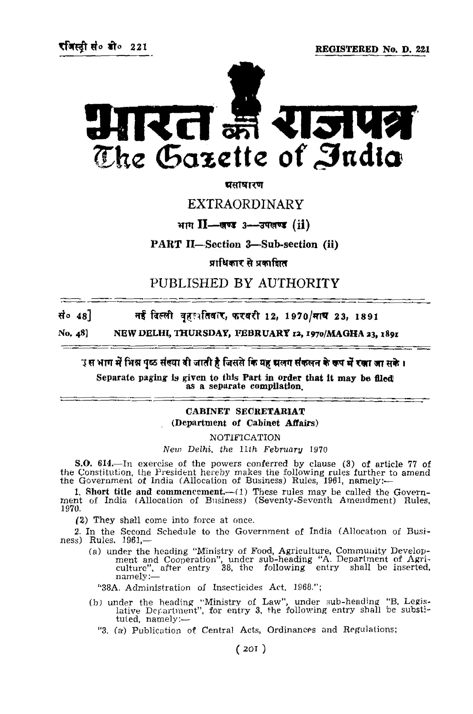
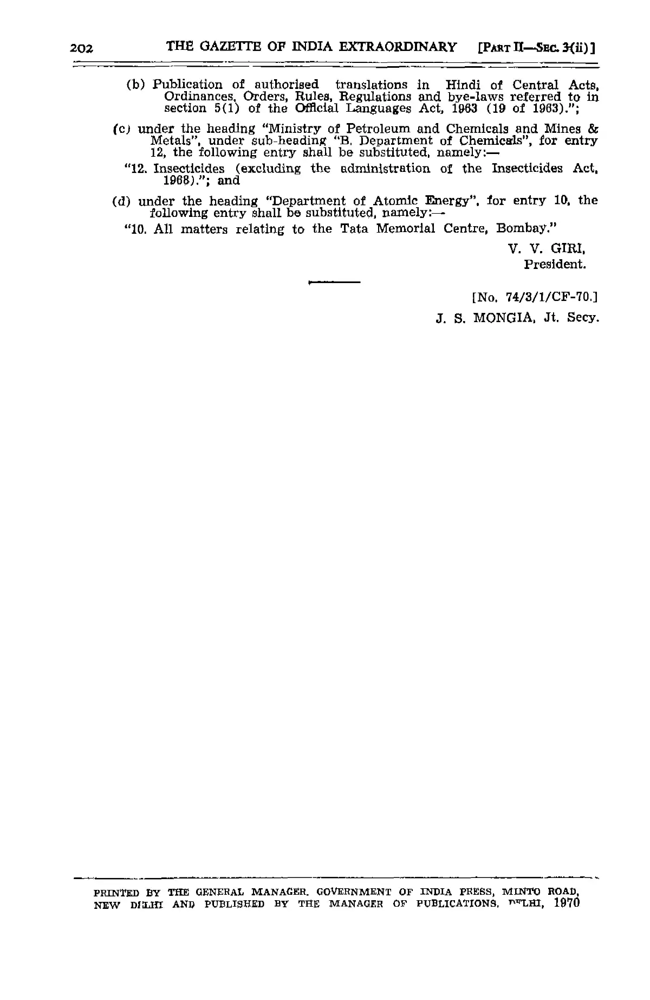

Amendment #77 (S.O. 614, 1970)
4 changes: 0 to the First Schedule, 4 to the Second Schedule. 4 applied
The order, page by page
Page 1 of 2

12after Schedule 2 › Ministry of Food, Agriculture, Community Develop- ment and Cooperation › Department of Agri- culture › entry 38
- 38A, Administration of Insecticides Act, 1968.
applied at schedule 2 › ministry Ministry of Food, Agriculture, Community Development and Cooperation › department A › part IV ›… in the Rules after #77
Schedule 2 › Ministry of Law › Legis- lative Departinent › entry 3
- 43.
- a. Publication of Central Acts, Ordinances and Regulations ( 201 ) THE GAZETTE OF INDIA EXTRAORDINARY
- b. Publication of authorised translations in Hindi of Central Acts Ordinances, Orders, Rules, Regulations and bye-laws referred to in section 5(1) of the Official Languages Act, 1963 (19 of 1963).
applied at schedule 2 › ministry MINISTRY OF LAW. › department B › entry 3 in the Rules after #77
read page break, states inferred loose
Page 2 of 2

34Schedule 2 › Ministry of Petroleum and Chemicals and Mines & Metals › Department of Chemicals › entry 12
- 12. Insecticides (excluding the administration of the Insecticides Act 1968).
applied at schedule 2 › ministry MINISTRY OF PETROLEUM AND CHEMICALS AND MINES & METALS › department B › entry 12 in the Rules after #77
Schedule 2 › Department of Atomic Energy › entry 10
- 10. All matters relating to the Tata Memorial Centre, Bombay.
applied at schedule 2 › ministry DEPARTMENT OF ATOMIC ENERGY › entry 10 in the Rules after #77
How this document was read
Changes placed by an inference rule
| Change | Rule | Status | What |
|---|---|---|---|
| 2 | loose | accepted | change 2: department Legis- lative Departinent taken for department LEGISLATIVE DEPARTMENT., named loosely |
From the Government of India (Allocation of Business) Rules, 1961 and their amendments, as published by the Cabinet Secretariat (cabsec.gov.in), read by orgpedia. The readings of the older scanned gazettes have known gaps.